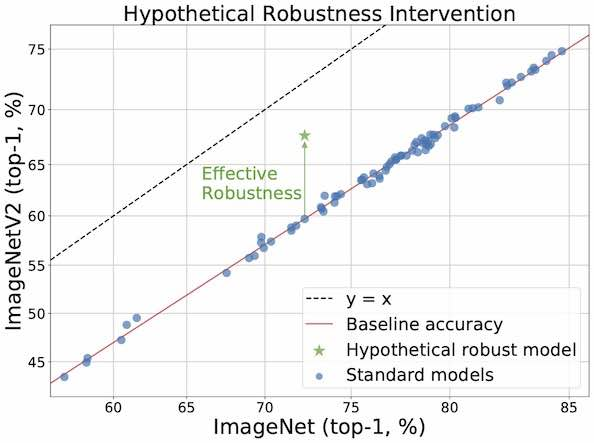
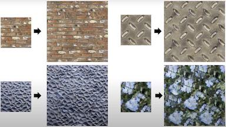
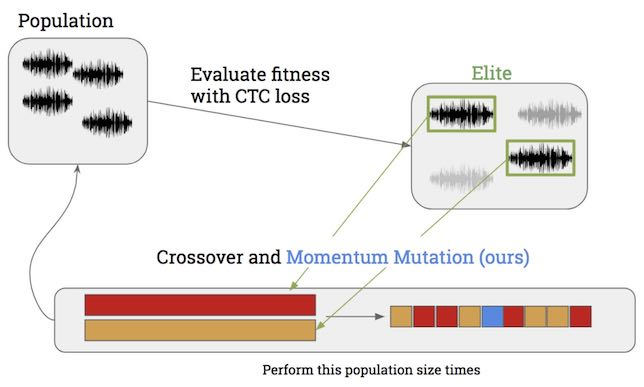
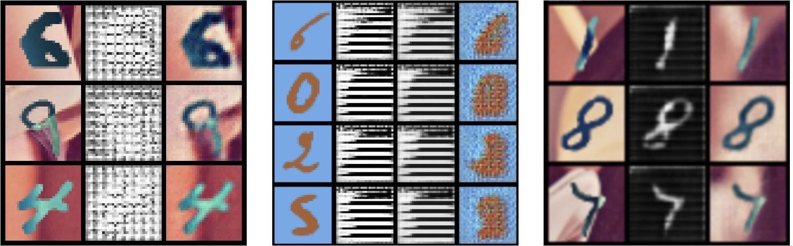

|
I am a PhD student in the CS department at Stanford University, working at the Stanford AI Lab. I like studying the foundations of machine learning with an emphasis on the reliability of real-world systems. I am supported by the NSF GRFP Fellowship. Previously, I graduated with my BS in EECS from UC Berkeley. I am very fortunate to have worked with Ludwig Schmidt & Ben Recht at Berkeley AI Research during my time there. I also had an amazing time teaching and interacting with the Machine Learning @ Berkeley community. In industry, I've been blessed to able to work with Raquel Urtasun & Ersin Yumer at Uber ATG and Bryan Catanzaro & Guilin Liu at NVIDIA. Google Scholar / Resume / Github / Twitter / LinkedIn Email: rtaori_at_stanford_dot_edu |

|
|
|
|  |
Rohan Taori, Achal Dave, Vaishaal Shankar, Nicholas Carlini, Benjamin Recht, Ludwig Schmidt Under review. Website / Paper / Code & Data / Interactive Plotting We study how robust current ImageNet models are to distribution shifts arising from natural variations in datasets. Informed by a very large experimental testbed, we find that there is little to no transfer of robustness from current synthetic to natural distribution shift. |
|  |
Guilin Liu, Rohan Taori, Ting-Chun Wang, Zhiding Yu, Shiqiu Liu, Fitsum Reda, Karan Sapra, Andrew Tao, Bryan Catanzaro Under review. Paper / Short Video / Long Video We propose a new learned framework for texture synthesis that allows for fast, high-resolution, and diverse generation for arbitrary textures. We utilize the transpose convolution operation as a soft way to stitch texels together. Our method achieves state-of-the-art quality on various metrics. |
|  |
Rohan Taori, Amog Kamsetty, Brenton Chu, Nikita Vemuri 2019 IEEE Deep Learning and Security Workshops. Paper / Code We adopt a black-box approach to generate adversarial examples for a speech-to-text system. |
|  |
Murtaza Dalal, Alexander Li, Rohan Taori Paper We investigate the use of autoregressive models as density estimators and find they are much less reliable than previously thought. |
|
|
I ran or was heavily involved with Machine Learning @ Berkeley's Data Science Class for a number of semesters. You can find complete course content (lecture slides, demos, & homeworks) from those semesters online:
Fall '17,
Spring '18,
Fall '18.
Some lectures I gave:
- Data Science 101 Lecture on analyzing 2016 campaign finance donations using numpy, pandas, and matplotlib.
- Clustering Lecture on common clustering techniques and a very cool flower compression demo.
- Linear Regression Lecture on the basics of linear regression.
- SVM Lecture on how Support Vector Machines (SVMs) work along with a cool demo.
- GAN Lecture on how Generative Adversarial Networks (GANs) work.
- Image Captioning Lecture on how common image captioning models are trained.
I also organized with my friends a series of public workshops exploring topics in deep learning. Some of the workshops and other reading groups I've given:
- Intro to Deep Learning Workshop I gave with Sajel Shah at CalHacks 5.0.
- Intro to Reinforcement Learning Workshop I gave with Brenton Chu.
- Autogressive models presentation: MADE, PixelCNN, and more [ask for slides if interested].
- Brief tutorial on variational inference [ask for slides if interested].
- Inception + ResNet - common neural network architectures and why they're popular [ask for slides if interested].
- Robust machine learning presentations: adversarial examples, distribution shift, and more [ask for slides if interested].
|
Website template from Jon Barron. |